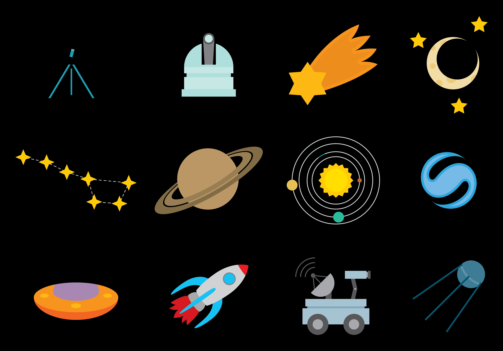

Cuentos
wewefwefwef3erfewdcfwdfdfverfve
Aqui van los cuentos interactivos n the fall of 2011 Peter Norvig taught a class with Sebastian Thrun on artificial intelligence at Stanford attended by 175 students in situ -- and over 100,000 via an interactive webcast. He shares what he learned about teaching to a global classroom. This talk was presented at an official TED conference, and was featured by our editors on the home page.
En Scrum, el encargado de elaborar los elementos del Product Backlog es el Product Owner. Sin embargo, el Scrum Master tiene la tarea de ayudar al equipo Scrum (Product Owner y desarrolladores) a aplicar técnicas para que los elementos del Product Backlog sean claros y concisos. Una de esas formas, puede ser ayudandolos a escribir historias de usuario.
En Scrum, el encargado de elaborar los elementos del Product Backlog es el Product Owner. Sin embargo, el Scrum Master tiene la tarea de ayudar al equipo Scrum (Product Owner y desarrolladores) a aplicar técnicas para que los elementos del Product Backlog sean claros y concisos. Una de esas formas, puede ser ayudandolos a escribir historias de usuario.
En Scrum, el encargado de elaborar los elementos del Product Backlog es el Product Owner. Sin embargo, el Scrum Master tiene la tarea de ayudar al equipo Scrum (Product Owner y desarrolladores) a aplicar técnicas para que los elementos del Product Backlog sean claros y concisos. Una de esas formas, puede ser ayudandolos a escribir historias de usuario.
Tecnologia en la educacion
wewefwefwef3erfewdcfwdfdfverfve